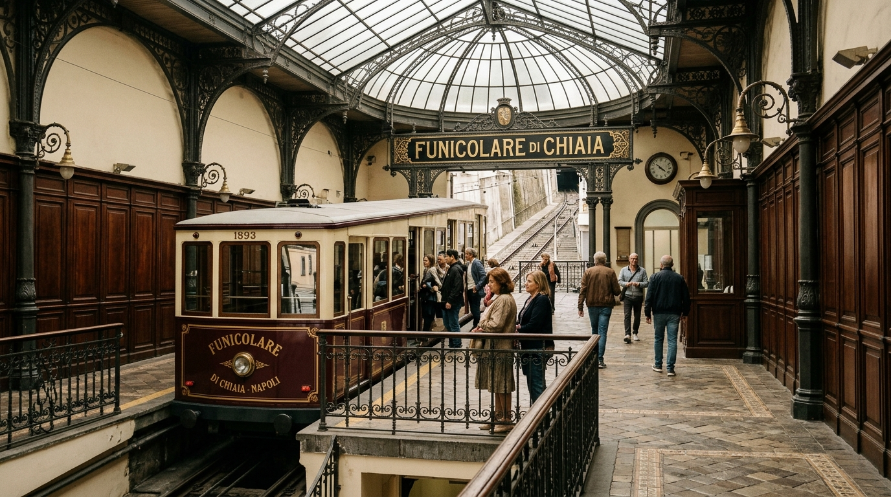
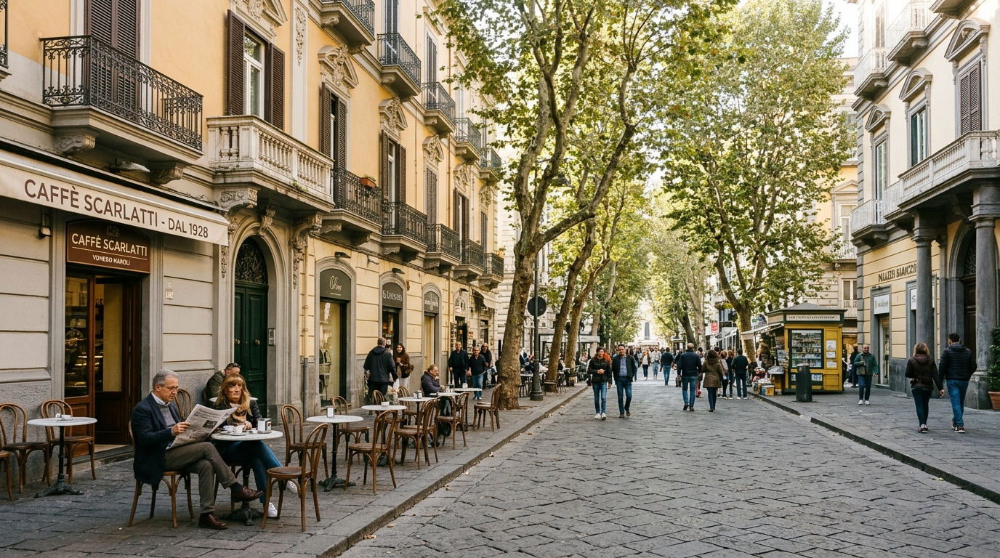

La Nostra Posizione
Un'isola di quiete ed eleganza, a pochi minuti da ogni meraviglia.
Vivere Napoli dal Vomero significa godersi il meglio di due mondi: l'energia travolgente del centro storico durante il giorno e il rientro serale in un quartiere residenziale, sicuro, pulito e alberato, ricco di boutique raffinate, caffè letterari e ristoranti d'eccellenza.
Da qui, il Golfo di Napoli, il Vesuvio, Capri e Castel dell'Ovo si abbracciano con un solo sguardo. Camminare lungo Via Aniello Falcone al tramonto o affacciarsi dalla terrazza del belvedere di San Martino è un'emozione che rimane impressa per sempre.
Castel Sant'Elmo & San Martino
A soli 10 minuti a piedi dal B&B. La fortezza medievale scavata nel tufo offre il panorama a 360° più impressionante su tutta la Campania.

Le Tre Funicolari Storiche
Un capolavoro ingegneristico di fine Ottocento: Funicolare di Chiaia, Funicolare Centrale e di Montesanto collegano la collina a Spaccanapoli e al mare in 5 minuti.

Piazza Vanvitelli & Via Scarlatti
Il cuore pedonale dello shopping napoletano d'alta classe, gelaterie artigianali e pizzerie pluripremiate dove gustare la vera pizza a portafoglio.
I Consigli dell'Host
La discesa della Pedamentina
Uno degli itinerari pedonali più antichi d'Europa: 414 scalini in pietra tufacea che scendono da San Martino attraverso orti urbani, pergolati di limoni e vedute aperte sul mare fino al cuore di Corso Vittorio Emanuele e Spaccanapoli.
- Durata circa 25 minuti a piedi in discesa rilassata
- Orario perfetto al mattino presto o un'ora prima del tramonto
- Al ritorno risalita comoda in funicolare fino a Piazza Vanvitelli